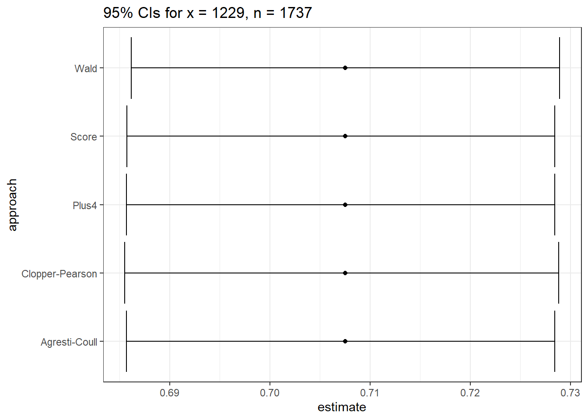
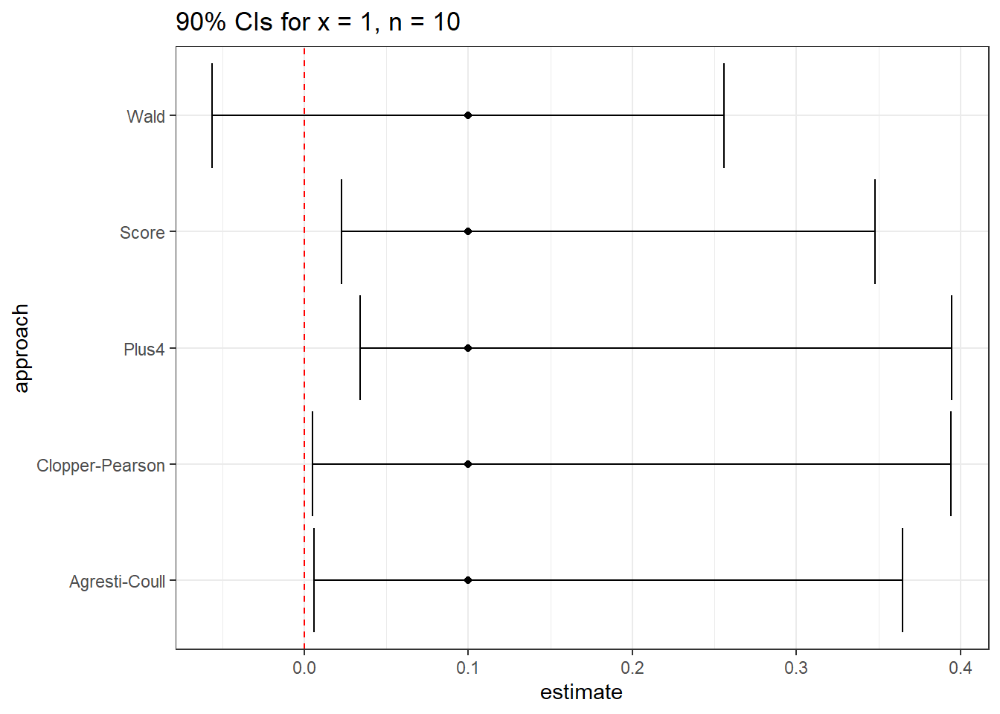

knitr::opts_chunk$set(comment = NA)
source("data/Love-boost.R")
library(janitor)
library(kableExtra)
library(mosaic)
library(broom)
library(tidyverse)
theme_set(theme_bw())25 Estimating a Population Proportion
We’ve focused on creating statistical inferences about a population mean, or difference between means, where we care about a quantitative outcome. Now, we’ll tackle categorical outcomes, by estimating a confidence interval around a population proportion.
25.1 Setup: Packages Used Here
25.2 A First Example: Serum Zinc in the “Normal” Range?
Recall that in the serum zinc study discussed in Chapter 19, we have 462 teenage male subjects, of whom 395 (or 85.5%) fell in the “normal range” of 66 to 110 micrograms per deciliter.
serzinc <- read_csv("data/serzinc.csv", show_col_types = FALSE)
serzinc <- serzinc |>
mutate(in_range = ifelse(zinc >= 66 & zinc <= 110, 1, 0))
serzinc |> tabyl(in_range) |>
adorn_totals() |> adorn_pct_formatting() in_range n percent
0 67 14.5%
1 395 85.5%
Total 462 100.0%Previously, we estimated a confidence interval for the mean of the population zinc levels. Now, we want to estimate a confidence interval for the proportion of the population whose serum zinc levels are in the range of 66 to 110. We want to build both a point estimate for the population proportion, and a confidence interval for the population proportion.
Now, let’s identify a 95% confidence interval for the proportion of the population whose zinc levels are within the “normal” range. We have seen that 395 / 462 subjects (or a proportion of 0.855) fall in the “normal range” in our sample. For now, that will also be our point estimate of the proportion in the “normal range” across the entire population of teenagers like those in our sample.
serzinc <- serzinc |>
mutate(in_range = ifelse(zinc > 65 & zinc < 111, 1, 0))
serzinc |> tabyl(in_range) in_range n percent
0 67 0.1450216
1 395 0.8549784Once we’ve created this 0-1 variable, there are several available approaches for wrapping a confidence interval around this proportion.
25.2.1 Using an Intercept-Only Regression Again?
We might consider taking the same approach as we did with the population mean earlier:
model_zincprop <- lm(in_range ~ 1, data = serzinc)
tidy(model_zincprop, conf.int = TRUE, conf = 0.90) |>
kbl(digits = 3) |> kable_minimal()| term | estimate | std.error | statistic | p.value | conf.low | conf.high |
|---|---|---|---|---|---|---|
| (Intercept) | 0.855 | 0.016 | 52.133 | 0 | 0.828 | 0.882 |
While there are more powerful approaches to estimate a confidence interval around this proportion, this simple approach turns out not to be too bad, so long as the sample proportion isn’t very close to either 0 or 1.
25.2.2 A 100(1-\(\alpha\))% Confidence Interval for a Population Proportion
Suppose we want to estimate a confidence interval for an unknown population proportion, \(\pi\), on the basis of a random sample of n observations from that population which yields a sample proportion of p. Note that this p is the sample proportion – it’s not a p value.
- In our serum zinc example, we have n = 462 observations, with a sample proportion (“in range”) of p = 0.855.
A 100(1-\(\alpha\))% confidence interval for the population proportion \(\pi\) can be created by using the standard normal distribution, the sample proportion, p, and the standard error of a sample proportion, which is defined as the square root of p multiplied by (1-p) divided by the sample size, n.
- So the standard error is estimated in our serum zinc example as:
\[ \sqrt{\frac{p (1-p)}{n}} = \sqrt{\frac{0.855(1-0.855)}{462}} = \sqrt{0.000268} = 0.016 \]
And thus, our confidence interval is \(p \pm Z_{\alpha/2} \sqrt{\frac{p(1-p)}{n}}\)
where \(Z_{\alpha/2}\) = the value from a standard Normal distribution cutting off the top \(\alpha/2\) of the distribution, obtained in R by substituting the desired \(\alpha/2\) value into the following command: qnorm(alpha/2, lower.tail=FALSE).
Note: This interval is reasonably accurate so long as np and n(1-p) are each at least 5.
For the serum zinc data, we have np = (462)(0.855) = 395 and n(1-p) = 462(1 - 0.855) = 67, so this should be ok.
For \(\alpha\) = 0.05, we have \(Z_{\alpha/2}\) = 1.96, approximately.
qnorm(0.025, lower.tail = FALSE)[1] 1.959964- Thus, for the serum zinc estimate, this confidence interval would be:
\[ p \pm Z_{\alpha/2} \sqrt{\frac{p(1-p)}{n}} = \frac{395}{462} \pm 1.96 \sqrt{\frac{0.855(1-0.855)}{462}} = 0.855 \pm 0.032 \]
or (0.823, 0.887).
25.3 Using binom.test from the mosaic package
I am aware of at least seven different procedures for estimating a confidence interval for a population proportion using R. All have minor weaknesses: none is importantly different from the others in many practical situations. Five of these methods are available using the binom.test function from the mosaic package in R.
The general format for using the binom.test function is as follows:
binom.test(x = 395, # substitute in number of successes
n = 462, # substitute in number of trials
conf.level = 0.95, # default confidence level
p = 0.5, # default null hypothesis proportion
ci.method = "XXX") # see below for XXX optionswhere the appropriate ci.method is obtained from the table below.
| Approach | ci.method to be used |
|---|---|
| Wald | “Wald” |
| Clopper-Pearson | “Clopper-Pearson” or “binom.test” |
| Score | “Score” or “prop.test” |
| Agresti-Coull | “agresti-coull” |
| Plus4 | “plus4” |
25.3.1 The Wald test approach
The Wald approach can be used to establish a very similar confidence interval to the one we calculated above, based on something called the Wald test.
Here, we specify the x and n values. n is the total number of observations, and x is the number where the event of interest (in this case, serum zinc levels in the normal range) occurs. So x = 395 and n = 462.
m_wald <- binom.test(x = 395, n = 462,
conf.level = 0.95,
ci.method = "Wald")
m_wald
Exact binomial test (Wald CI)
data: 395 out of 462
number of successes = 395, number of trials = 462, p-value < 2.2e-16
alternative hypothesis: true probability of success is not equal to 0.5
95 percent confidence interval:
0.8228698 0.8870869
sample estimates:
probability of success
0.8549784 The Wald confidence interval is always symmetric around our point estimate, and can dip below 0 or above 1.
When I fit intervals using the approaches in mosaic::binom_test() I will usually tidy them.
tidy(m_wald) |>
select(estimate, conf.low, conf.high, statistic, parameter) |>
kbl(digits = 3) |> kable_classic(full_width = F)| estimate | conf.low | conf.high | statistic | parameter |
|---|---|---|---|---|
| 0.855 | 0.823 | 0.887 | 395 | 462 |
The other elements of the tidied result are shown below.
tidy(m_wald) |>
select(method, alternative, p.value) |>
kbl(digits = 3) |> kable_classic(full_width = F)| method | alternative | p.value |
|---|---|---|
| Exact binomial test (Wald CI) | two.sided | 0 |
25.3.2 The Clopper-Pearson approach
The binom.test command can be used to establish an “exact” confidence interval. This uses the method of Clopper and Pearson from 1934, and is exact in the sense that it guarantees, for instance, that the confidence level associated with the interval is at least as large as the nominal level of 95%, but not that the interval isn’t wider than perhaps it needs to be.
m_clopper <- binom.test(x = 395, n = 462,
conf.level = 0.95,
ci.method = "Clopper-Pearson")
m_clopper
data: 395 out of 462
number of successes = 395, number of trials = 462, p-value < 2.2e-16
alternative hypothesis: true probability of success is not equal to 0.5
95 percent confidence interval:
0.8195187 0.8858100
sample estimates:
probability of success
0.8549784 Clopper-Pearson is used by stats::binom.test() in R as well. Again, it guarantees coverage at least as large as the nominal coverage rate, but may produce wider intervals than the other methods we’ll see. The 95% confidence interval by this method is (0.820, 0.886), which is in the same general range as our previous estimates.
tidy(m_clopper) |>
select(estimate, conf.low, conf.high, statistic, parameter) |>
kbl(digits = 3) |> kable_classic(full_width = F)| estimate | conf.low | conf.high | statistic | parameter |
|---|---|---|---|---|
| 0.855 | 0.82 | 0.886 | 395 | 462 |
25.3.3 The Score approach
m_score <- mosaic::binom.test(x = 395, n = 462,
conf.level = 0.95,
ci.method = "Score")
m_score
Exact binomial test (Score CI without continuity correction)
data: 395 out of 462
number of successes = 395, number of trials = 462, p-value < 2.2e-16
alternative hypothesis: true probability of success is not equal to 0.5
95 percent confidence interval:
0.8199415 0.8841607
sample estimates:
probability of success
0.8549784 The Score approach is also used by stats::prop.test() and creates CIs by inverting p-values from score tests. It can be applied with a continuity correction (use ci.method = “prop.test”) or without.
In this case, we see that the Score approach and the Clopper-Pearson approach give very similar results.
tidy(m_score) |>
select(estimate, conf.low, conf.high, statistic, parameter) |>
kbl(digits = 3) |> kable_classic_2(full_width = F)| estimate | conf.low | conf.high | statistic | parameter |
|---|---|---|---|---|
| 0.855 | 0.82 | 0.884 | 395 | 462 |
As mentioned, the score test can also be run incorporating something called a continuity correction, since we are using a Normal approximation to the exact binomial distribution to establish our margin for error. R, by default, includes this continuity correction for the Score test when we use prop.test to collect it.
m_score_cor <- binom.test(x = 395, n = 462,
conf.level = 0.95,
ci.method = "prop.test")
m_score_cor
Exact binomial test (Score CI with continuity correction)
data: 395 out of 462
number of successes = 395, number of trials = 462, p-value < 2.2e-16
alternative hypothesis: true probability of success is not equal to 0.5
95 percent confidence interval:
0.8187706 0.8851359
sample estimates:
probability of success
0.8549784 tidy(m_score_cor) |>
select(estimate, conf.low, conf.high, statistic, parameter) |>
kbl(digits = 3) |> kable_paper(full_width = F)| estimate | conf.low | conf.high | statistic | parameter |
|---|---|---|---|---|
| 0.855 | 0.819 | 0.885 | 395 | 462 |
25.3.4 The Agresti-Coull Approach
m_agresti <- binom.test(x = 395, n = 462,
conf.level = 0.95,
ci.method = "agresti-coull")
m_agresti
Exact binomial test (Agresti-Coull CI)
data: 395 out of 462
number of successes = 395, number of trials = 462, p-value < 2.2e-16
alternative hypothesis: true probability of success is not equal to 0.5
95 percent confidence interval:
0.8198094 0.8842928
sample estimates:
probability of success
0.8549784 The Agresti-Coull approach is the Wald method after adding Z successes and Z failures to the data, where Z is the appropriate quantile for a standard Normal distribution (1.96 for a 95% CI).
tidy(m_agresti) |>
select(estimate, conf.low, conf.high, statistic, parameter) |>
kbl(digits = 3) |> kable_paper(full_width = F)| estimate | conf.low | conf.high | statistic | parameter |
|---|---|---|---|---|
| 0.855 | 0.82 | 0.884 | 395 | 462 |
25.3.5 The “Plus 4” approach
This approach is just the Wald method after adding 2 successes and 2 failures (so 4 observations) to the data. It will be very similar to the Agresti-Coull method if we are working with a 95% confidence interval.
m_plus4 <- binom.test(x = 395, n = 462,
conf.level = 0.95,
ci.method = "plus4")
m_plus4
Exact binomial test (Plus 4 CI)
data: 395 out of 462
number of successes = 395, number of trials = 462, p-value < 2.2e-16
alternative hypothesis: true probability of success is not equal to 0.5
95 percent confidence interval:
0.8196844 0.8841783
sample estimates:
probability of success
0.8549784 tidy(m_plus4) |>
select(estimate, conf.low, conf.high, statistic, parameter) |>
kbl(digits = 3) |> kable_paper(full_width = F)| estimate | conf.low | conf.high | statistic | parameter |
|---|---|---|---|---|
| 0.855 | 0.82 | 0.884 | 395 | 462 |
25.3.6 SAIFS: single augmentation with an imaginary failure or success
SAIFS stands for “single augmentation with an imaginary failure or success” and the method I’ll describe is one of several similar approaches. The next subsection describes the R code for calculating the relevant confidence interval.
An approach I like for the estimation of a confidence interval for a single population proportion/rate is to estimate the lower bound of a confidence interval with an imaginary failure added to the observed data, and estimate the upper bound of a confidence interval with an imaginary success added to the data.
Suppose we have X successes in n trials, and we want to establish a confidence interval for the population proportion of successes.
Let \(p_1 = (X+0)/(n+1), p_2 = (X+1)/(n+1), q_1 = 1 - p_1, q_2 = 1 - p_2\)
The lower bound of a 100(1-\(\alpha\))% confidence interval for the population proportion of successes using the SAIFS procedure is then \(LB_{SAIFS}(x,n,\alpha) = p_1 - t_{\alpha/2, n-1}\sqrt{\frac{p_1 q_1}{n}}\)
The upper bound of that same 100(1-\(\alpha\))% confidence interval for the population proportion of successes using the SAIFS procedure is \(UB_{SAIFS}(x,n,\alpha) = p_2 + t_{\alpha/2, n-1}\sqrt{\frac{p_2 q_2}{n}}\)
Returning to the serum zinc example, we’ve got 395 “successes” (value in the normal range) out of 462 “trials” (values measured), so that X = 395 and n = 462
So we have \(p_1 = \frac{X + 0}{n + 1} = \frac{395}{463} = 0.8531\), \(p_2 = \frac{X + 1}{n + 1} = \frac{396}{463} = 0.8553\), and \(q_1 = 1 - p_1 = 0.1469\) and \(q_2 = 1 - p_2 = 0.1447\)
We have \(n = 462\) so if we want a 95% confidence interval (\(\alpha = 0.05\)), then we have \(t_{\alpha/2, n-1} = t_{0.025, 461} = 1.9651\), which I determined using R’s qt function:
qt(0.025, df = 461, lower.tail=FALSE)[1] 1.965123- Thus, our lower bound for a 95% confidence interval is \(p_1 - t_{\alpha/2, n-1}\sqrt{\frac{p_1 q_1}{n}}\), or \(0.8531 - 1.9651 \sqrt{\frac{0.8531(0.1469)}{462}}\), which is 0.8531 - 0.0324 or 0.8207.
- Our upper bound is \(p_2 + t_{\alpha/2, n-1}\sqrt{\frac{p_2 q_2}{n}}\), or \(0.8553 - 1.9651 \sqrt{\frac{0.8553(0.1447)}{462}}\), which is 0.8553 + 0.0323, or 0.8876.
So the 95% SAIFS confidence interval estimate for the population proportion, \(\pi\), of teenage males whose serum zinc levels fall within the “normal range” is (0.821, 0.888).
25.3.7 A Function in R to Calculate the SAIFS Confidence Interval
I built an R function, called saifs.ci and contained in the Markdown for this document as well as the Love-boost.R script on the web site, which takes as its arguments a value for X = the number of successes, n = the number of trials, and conf.level = the confidence level, and produces the sample proportion, the SAIFS lower bound and upper bound for the specified two-sided confidence interval for the population proportion, using the equations above.
Here, for instance, are 95%, 90% and 99% confidence intervals for the population proportion \(\pi\) that we have been studying in the serum zinc data.
saifs.ci(x = 395, n = 462)Sample Proportion 0.025 0.975
0.855 0.821 0.887 saifs.ci(x = 395, n = 462, conf=0.9)Sample Proportion 0.05 0.95
0.855 0.826 0.882 saifs.ci(x = 395, n = 462, conf=0.99, dig=5)Sample Proportion 0.005 0.995
0.85498 0.81054 0.89763 Note that in the final interval, I asked the machine to round to five digits rather than the default of three. On my desktop (and probably yours), doing so results in this output:
Sample Proportion 0.005 0.995
0.85498 0.81054 0.89763 I’ve got some setting wrong in my bookdown work so that this doesn’t show up above when the function is called. Sorry!
25.3.8 The saifs.ci function in R
`saifs.ci` <-
function(x, n, conf.level=0.95, dig=3)
{
p.sample <- round(x/n, digits=dig)
p1 <- x / (n+1)
p2 <- (x+1) / (n+1)
var1 <- (p1*(1-p1))/n
se1 <- sqrt(var1)
var2 <- (p2*(1-p2))/n
se2 <- sqrt(var2)
lowq = (1 - conf.level)/2
tcut <- qt(lowq, df=n-1, lower.tail=FALSE)
lower.bound <- round(p1 - tcut*se1, digits=dig)
upper.bound <- round(p2 + tcut*se2, digits=dig)
res <- c(p.sample, lower.bound, upper.bound)
names(res) <- c('Sample Proportion',lowq, 1-lowq)
res
}25.4 A Second Example: Ebola Mortality Rates through 9 Months of the Epidemic
The World Health Organization’s Ebola Response Team published an article in the October 16, 2014 issue of the New England Journal of Medicine, which contained some data I will use in this example, focusing on materials from their Table 2.
As of September 14, 2014, a total of 4,507 confirmed and probable cases of Ebola virus disease (EVD) had been reported from West Africa. In our example, we will look at a set of 1,737 cases, with definitive outcomes, reported in Guinea, Liberia, Nigeria and Sierra Leone.
Across these 1,737 cases, a total of 1,229 cases led to death. Based on these sample data, what can be said about the case fatality rate in the population of EVD cases with definitive outcomes for this epidemic?
25.4.1 Working through the Ebola Virus Disease Example
We have n = 1,737 subjects, of whom we observed death in 1,229, for a sample proportion of \(p = \frac{1229}{1737} = 0.708\). The standard error of that sample proportion will be
\(SE(p) = \sqrt{\frac{p(1-p)}{n}} = \sqrt{\frac{0.708(1-0.708)}{1737}} = 0.011\)
And our 95% confidence interval (so that we’ll use \(\alpha\) = 0.05) for the true population proportion, \(\pi\), of EVD cases with definitive outcomes, who will die is \(p \pm Z_{.025} \sqrt{\frac{p(1-p)}{n}}\), or 0.708 \(\pm\) 1.96(0.011) = \(0.708 \pm 0.022\), or (0.686, 0.730)
Note that I simply recalled from our prior work that \(Z_{0.025} = 1.96\), but we can verify this:
qnorm(0.025, lower.tail=FALSE)[1] 1.959964Since both np=(1737)(0.708)=1230 and n(1-p)=(1737)(1-0.708)=507 are substantially greater than 5, this should be a reasonably accurate confidence interval.
We have 95% confidence in an interval estimate for the true population proportion that falls between 0.686 and 0.730. Equivalently, we could say that we’re 95% confident that the true case fatality rate expressed as a percentage rather than a proportion, is between 68.6% and 73.0%.
25.4.2 Using R to estimate the CI for our Ebola example
ebola_wald <- binom.test(x = 1229, n = 1737, conf.level = 0.95,
ci.method = "Wald") |>
tidy() |> select(estimate, conf.low, conf.high)
ebola_clop <- binom.test(x = 1229, n = 1737, conf.level = 0.95,
ci.method = "Clopper-Pearson") |>
tidy() |> select(estimate, conf.low, conf.high)
ebola_scor <- binom.test(x = 1229, n = 1737, conf.level = 0.95,
ci.method = "Score") |>
tidy() |> select(estimate, conf.low, conf.high)
ebola_agco <- binom.test(x = 1229, n = 1737, conf.level = 0.95,
ci.method = "agresti-coull") |>
tidy() |> select(estimate, conf.low, conf.high)
ebola_plus <- binom.test(x = 1229, n = 1737, conf.level = 0.95,
ci.method = "plus4") |>
tidy() |> select(estimate, conf.low, conf.high)
ebola_res <- bind_rows(ebola_wald, ebola_clop, ebola_scor,
ebola_agco, ebola_plus) |>
mutate(approach = c("Wald", "Clopper-Pearson", "Score",
"Agresti-Coull", "Plus4"))
ebola_res |> kbl(digits = 6) |> kable_classic(full_width = FALSE)| estimate | conf.low | conf.high | approach |
|---|---|---|---|
| 0.707542 | 0.686150 | 0.728934 | Wald |
| 0.707542 | 0.685524 | 0.728856 | Clopper-Pearson |
| 0.707542 | 0.685710 | 0.728457 | Score |
| 0.707542 | 0.685705 | 0.728462 | Agresti-Coull |
| 0.707542 | 0.685687 | 0.728443 | Plus4 |
This is way more precision than we can really justify, but I just want you to see that the five results are all (slightly) different.
25.4.3 Plotting the Confidence Intervals for the Ebola Virus Disease Example
ggplot(ebola_res, aes(x = approach, y = estimate)) +
geom_point() +
geom_errorbar(aes(ymin = conf.low, ymax = conf.high)) +
coord_flip() +
labs(title = "95% CIs for x = 1229, n = 1737")
So in this case, it really doesn’t matter which one you choose. With a smaller sample, we may not come to the same conclusion about the relative merits of these different approaches.
25.4.4 What about the saifs.ci() result?
saifs.ci(x = 1229, n = 1737, conf.level=0.95)Sample Proportion 0.025 0.975
0.708 0.686 0.729 25.5 Can the Choice of Confidence Interval Method Matter?
Yes. This will especially be the case when we have a small sample size, and a probability of “success” that is close to either 0 or 1. For instance, suppose we run 10 trials, and obtain a single success, then use these data to estimate the true proportion of success, \(\pi\).
The 90% confidence intervals under this circumstance are very different.
tidy1 <- binom.test(x = 1, n = 10, conf.level = 0.90,
ci.method = "Wald") |> tidy()
tidy2 <- binom.test(x = 1, n = 10, conf.level = 0.90,
ci.method = "Clopper-Pearson") |> tidy()
tidy3 <- binom.test(x = 1, n = 10, conf.level = 0.90,
ci.method = "Score") |> tidy()
tidy4 <- binom.test(x = 1, n = 10, conf.level = 0.90,
ci.method = "agresti-coull") |> tidy()
tidy5 <- binom.test(x = 1, n = 10, conf.level = 0.90,
ci.method = "plus4") |> tidy()
res <- bind_rows(tidy1, tidy2, tidy3, tidy4, tidy5) |>
mutate(approach = c("Wald", "Clopper-Pearson", "Score",
"Agresti-Coull", "Plus4")) |>
select(approach, estimate, conf.low, conf.high)
res |> kbl(digits = 3) |> kable_paper(full_width = F)| approach | estimate | conf.low | conf.high |
|---|---|---|---|
| Wald | 0.1 | -0.056 | 0.256 |
| Clopper-Pearson | 0.1 | 0.005 | 0.394 |
| Score | 0.1 | 0.023 | 0.348 |
| Agresti-Coull | 0.1 | 0.006 | 0.364 |
| Plus4 | 0.1 | 0.034 | 0.395 |
Note that the Wald procedure doesn’t force the confidence interval to appear in the (0, 1) range.
ggplot(res, aes(x = approach, y = estimate)) +
geom_point() +
geom_errorbar(aes(ymin = conf.low, ymax = conf.high)) +
geom_hline(aes(yintercept = 0), col = "red", lty = "dashed") +
coord_flip() +
labs(title = "90% CIs for x = 1, n = 10")
None of these three approaches is always better than any of the others. When we have a sample size below 100, or the sample proportion of success is either below 0.10 or above 0.90, caution is warranted, although in many cases, the various methods give similar responses.